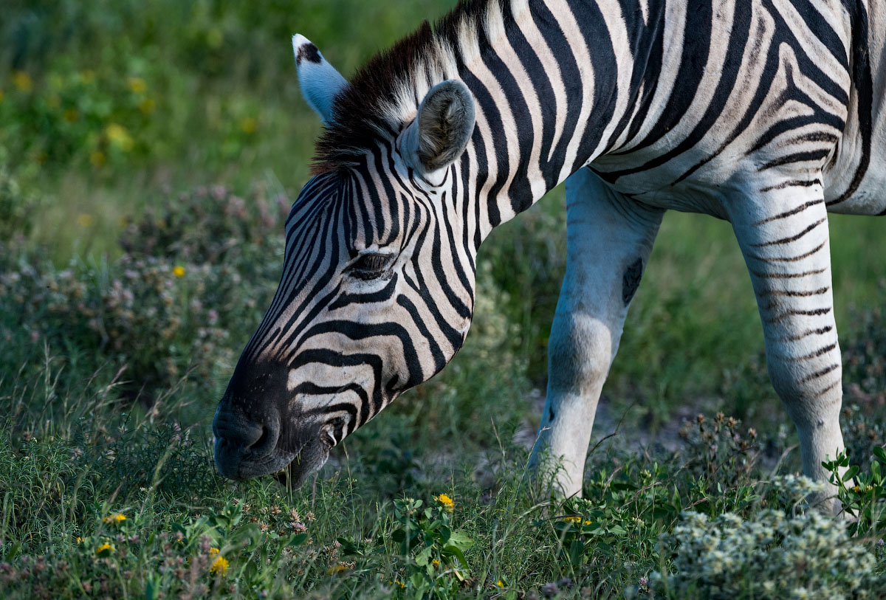
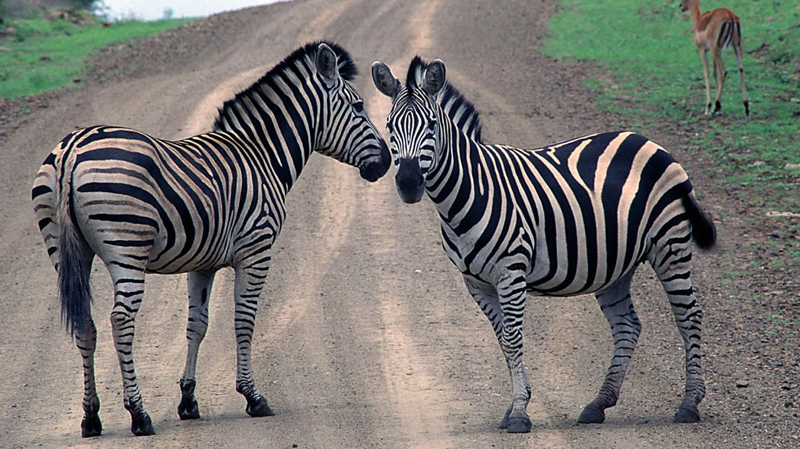

Зебра – отдельный вид рода лошадей, обитающий в Африке. Выделяют три вида зебр: пустынные, равнинные и горные.
Равнинные зебры облюбовали саванны восточной и южной части континента. Горные зебры живут в юго-западной части континента, в которой находится огромное количество высокогорных плато. Представители пустынного вида заселяют Кению и Эфиопию. Стоит отметить, что пустынных зебр осталось крайне мало, поэтому эти животные занесены в Красную книгу.
Различные виды зебр не скрещиваются между собой, даже когда их территории совпадают. При искусственном скрещивании представителей разных видов происходит большое количество выкидышей. Внешний вид зебры
Зебры – довольно крупные животные. Они могут весить 350 килограмм. Самки немного меньше самцов.
Расцветка меха представляет собой чередование полос черного и белого цвета. Считается, что, все-таки, основным является черный фон, а его разбавляют белые полосы. На шее, голове и передней части тела полосы располагаются вертикально, на задней части туловища они размещаются под углом, а конечности украшены горизонтальными полосами. Каждая особь имеет строго индивидуальный узор.
Полосатый окрас служит защитой от слепней и мух. Также он дезориентирует хищников, но на львов он не оказывает подобного эффекта. Львы успешно охотятся на зебр. Бегают зебры не так быстро как лошади, но они отличаются поразительной выносливостью. Поэтому не многие хищники охотятся на них. К тому же зебры имеют особую тактику, они спасаются от преследователя зигзагами, кидаясь из стороны в сторону. Догнать зебру довольно сложно. Если зебру загнать в угол, то она становится на дыбы, лягается и кусается. Зебры имеют отличное обоняние, у них великолепно развитое зрение и слух.